REG <- summary(fit1) # creamos un objeto para poder después extraer los coeficientes
write.csv2(REG$coefficients, "regresión prueba.csv")Unidad 4. Estructura y estética de gráficos con ggplot2.
En esta unidad veremos una serie de contenidos relacionados con parámetros estructurales del gráfico (como las escalas, la división de la ventana gráfica, etc.) y estéticos que van desde la paleta de colores utilizada hasta el tema general.
Sin embargo, empezaremos viendo cómo exportar un gráfico para luego poder ir extrayendo los que iremos generando.
Exportación de resultados y gráficos
Exportación de datos
A este respecto, en mi práctica personal suelo leer los resultados desde la consola de R y, de ser necesario, realizo el pasaje manualmente de la información que me resulte de interés a un excel para su almacenamiento. De todas maneras, existen maneras de exportar diferentes formatos de archivos desde R. Cuando lo considero necesario, utilizo archivos del tipo csv. Así por ejemplo para exportar los datos de una regresión:
Como vemos, debo tener una tabla limpia y luego agregar el nombre y formato del archivo a crear. Lo mismo si quisiera extraer la tabla de un anova o un tukey:
write.csv2(anova(fit3), "anova prueba.csv")
write.csv2(tukey3$groups, "tukey prueba2.csv")Por supuesto, todo lo que exportemos se guardará en el directorio seteado al comienzo con setwd().
Exportación de gráficos
Este apartado es mucho más útil que el anterior y nos va a permitir extraer nuestras figuras que hayamos creado de una forma adecuada. Veremos 3 formas de exportar un gráfico.
Interfaz gráfica de RStudio
En la ventana 4 de RStudio se nos muestran los gráficos que hayamos generado. En la barra superior de esa ventana (siempre que estemos en la pestaña Plots) veremos la opción de Export. Si allí entramos en Save as image nos brinda una serie de opciones de exportación. Menciono esta posibilidad porque en algunos contextos puede sernos de utilidad. Como siempre que utilizamos la interfaz gráfica, esta tiene la desventaja de no nos deja ningún tipo de registro de lo que hayamos hecho, lo que no nos permite repetir la exportación en igualdad de condiciones, si es que fuera necesario.
Devices
Una segunda opción es el uso de Devices. Esta opción consiste en un código inicial donde definimos el formato, luego el gráfico y finalmente el cierre. Así por ejemplo para exportar un jpg:
jpeg(file = "mi_grafico.jpg",
width = 12, height = 10, #ancho y alto
quality = 95, #grado de no-compresión
res = 300) #resolución en puntos por pulgada
boxplot(PS~ET,
data = SEM_Alim) # comandos gráficos
dev.off() # cerrar el gráficoTambién es posible exportar en PDF, SVG (formato vectorizado), y otros. Es recomendable pintar todo el texto (inicio + gráfico + cierre) y luego ejecutar todo como una única corrida.
ggsave
Esta es una opción interna dentro del entorno de ggplot2. Se debe ejecutar a continuación y luego de haber corrido el gráfico. Su estructura es la siguiente:
ggsave("mi gráfico.png", # nombre y formato
width = NA, height = NA, # ancho y alto, si no especificamos se ve tal cual en la ventana 4
dpi = 300) # resoluciónSi se quiere exportar en formato SVG, es necesaria la instalación del paquete svglite.
Títulos
Para modificar los títulos de nuestros gráficos utilizaremos el parámetro labs. Allí modificaremos la etiqueta de cada eje, de la leyenda, y posibles títulos del gráfico.
G3 <- G3 +
labs(x = "Estrés térmico",
y = "Peso seco (g)",
fill = expression(CO[2]), # cambia la leyenda
title = "Peso seco de semillas de soja") ; G3
Scales
Manipulando los ejes
Podemos establecer la estructura de nuestros ejes a partir de los comandos scale_x_*** donde en debemos indicar el tipo de dato de nuestro eje (todo esto es válido tanto para el eje x como el y). Así dependiendo del tipo de variable, serán los datos a modificar. Por ejemplo si la variable es continua:
... +
scale_x_continuos(expand = c(0,0), # estable la ubicación en el eje
limits=c(inferior,superior), # entre qué valores se graficará
breaks = seq(inferior,superior, # entre qué valores se mostrará la escala
by = número)) # cada cuánto habrá cortesEs importante destacar que el parámetro limits establece los límites del gráfico y los valores que se tomarán en cuenta. Si algo de nuestros datos excede ese valor, no será considerado para el gráfico. Si en cambio queremos tomar en cuenta todos los datos pero hacer un recorte en el gráfico, debemos usar el comando coord_cartesian(ylim=c(inferior,superior)) en una nueva línea.
En el caso de querer modificar los nombres que aparecen en el eje (habitualmente para variables discretas o categóricas) usaremos el comando labels:
scale_x_discrete(labels = c(etiqueta1, etiqueta2, ...))Continuando con nuestro ejemplo en el G3, comparemos con y sin manipulación de ejes:
G3
G3 <- G3 + scale_x_discrete(labels = c("Sin ET", "Con ET")) +
scale_y_continuous(expand = c(0,0),
limits = c(0, 12),
breaks = seq(0,12, by= 1)); G3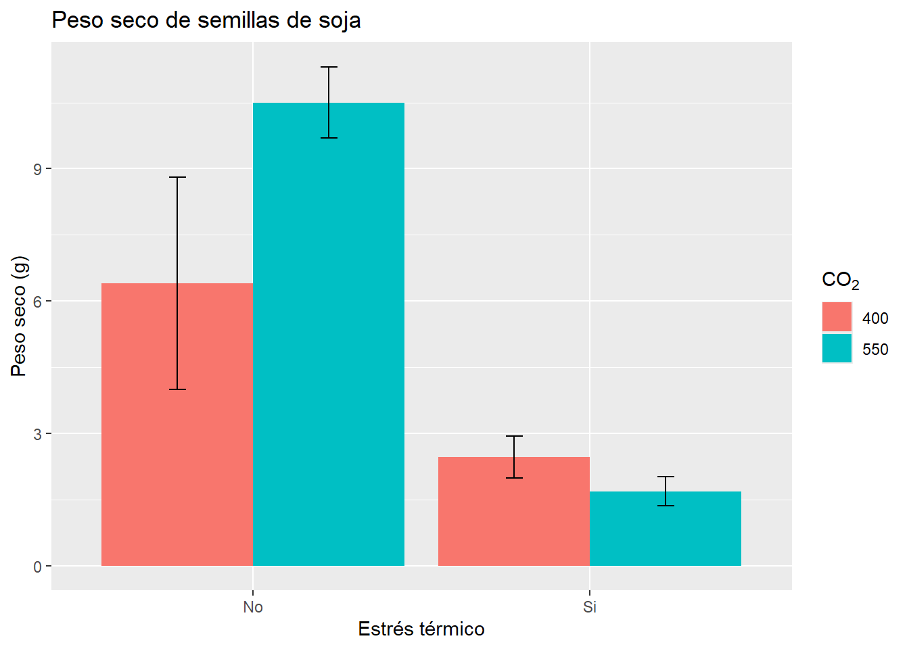
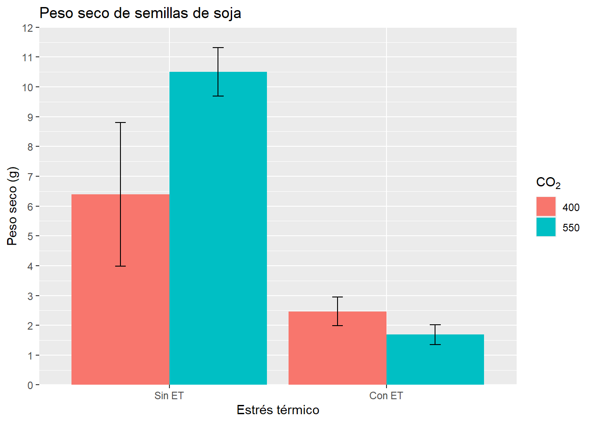
Colores
R permite la utilización de una gran cantidad de colores diferentes (ver documento ColorChart). Se pueden modificar los colores de casi todos los objetos en un gráfico, aquí nos centraremos en contornos y rellenos de nuestros elementos que representan los datos. Como regla general, si nuestro geom admite relleno este se modifica con el parámetro fill, mientras que col modificará el borde. Si no se admite relleno (gráficos de líneas o puntos), solo utilizaremos col. Cómo modificamos los colores varía un poco según diferentes casos:
Si el color es el mismo para todos, se modifica dentro de los parámetros del geom. Por ejemplo:
geom_col(col= "black", fill= "red").Si debemos modificar el color o el relleno según un criterio de clasificación (es decir que seteamos el parámetro que clasifica en el aes()) usaremos el comando
scale_colour_manual(values=c("color1", "color2", ....))para establecer manualmente los colores. Lo mismo para el relleno pero seráscale_fill_manual(values=c("color1", "color2", ....)). Es importante destacar que la cantidad de colores debe coincidir con los niveles del factor en cuestión.
Veamos un ejemplo donde combinamos lo visto hasta ahora:
G3 + geom_col(col = "black", position = "dodge") + # repetimos para cambiar el borde
scale_fill_manual(values = c("skyblue3", "antiquewhite2"))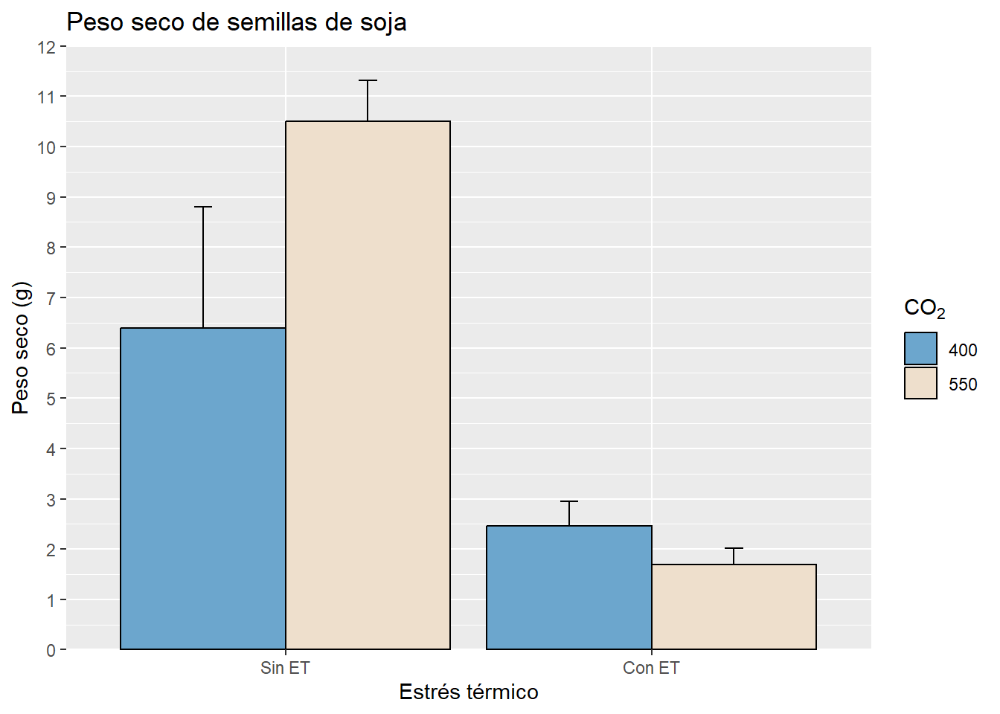
En estos casos decidimos establecer manualmente el color. También podemos utilizar paletas de colores que vienen preestablecidas. Algunas están con el R base y otras debemos cargarlas con paquetes. En este taller veremos el uso de la paleta viridis, de paquete homónimo. La función que utilizaremos es scale_fill_viridis_d(), donde la “d” refiere a discreto. Esta escala está especialmente diseñada para que la puedan distinguir personas daltónicas y asignará tantos colores como sean necesarios. La escala viridis va del violeta al amarillo, podemos reducir la escala estableciendo el comienzo y el final de la misma. Por otro lado, también veremos el uso del paquete paletteer, que incluye una enorme cantidad de paletas para utilizar (https://r-charts.com/es/paletas-colores/). Por ejemplo en el gráfico anterior:
G3 + geom_col(col = "black", position = "dodge") +
scale_fill_viridis_d()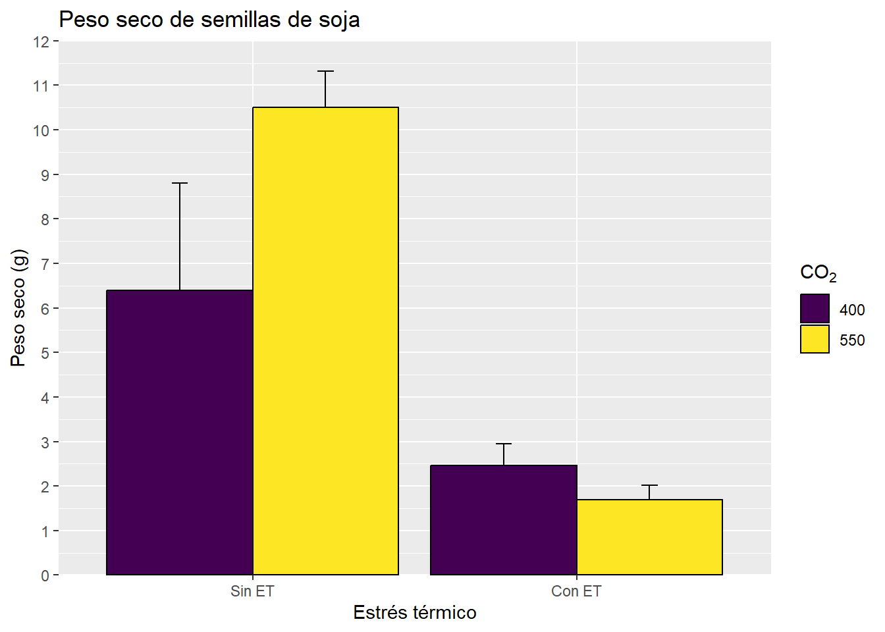
library(paletteer)
G3 + geom_col(col = "black", position = "dodge") +
scale_fill_manual(values = paletteer_d("colorBlindness::Blue2DarkOrange12Steps", 2,
type = "continuous"))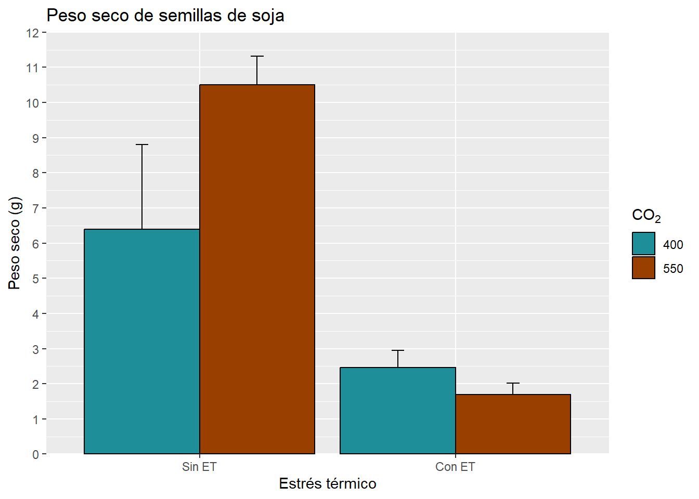
Si queremos saber exactamente qué colores utilizó la función, podemos utilizar la función viridis para nombrar los colores:
library(viridis)
viridis(2)[1] "#440154FF" "#FDE725FF"paletteer_d("colorBlindness::Blue2DarkOrange12Steps", 2,
type = "continuous")<colors>
#1E8E99FF #993F00FF Nos los da con el código RGB que podemos utilizar para otros gráficos.
Forma y tipo de línea
Otro parámetro que puede generar diferencias entre los niveles de una factor o que puede ser modificado para todos nuestros valores es la forma. Para indicar el cambio se hará del mismo modo que para el color o relleno, pero con el parámetro shape. Las diferentes formas se pueden visualizar en el documento Refcard, son 25 y algunas permiten que se les modifique el relleno. La forma puede ser combinada por el color para enfatizar las diferencias, y originarán una sola leyenda, por ejemplo:
ggplot(HOJA,
aes(SPAD, Pb,
col = ET, # clasificamos por color
shape = ET)) + # y por forma
geom_point(size= 5) +
scale_shape_manual(values = c(16, 18))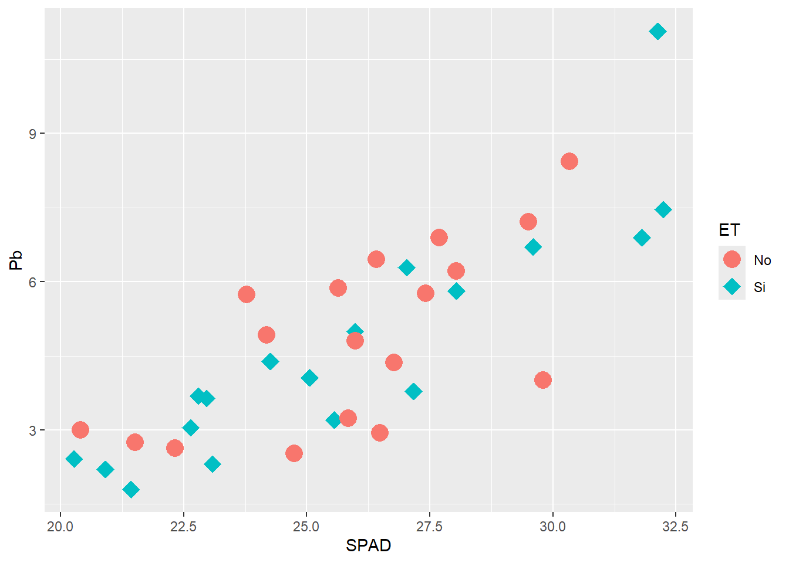
A su vez podemos establecer tipos de líneas en un gráfico de líneas. Funciona de la misma manera con el parámetro linetype:
ggplot(HOJA,
aes(SPAD, Pb,
col = ET,
shape = ET,
linetype = ET)) +
geom_point(size= 5) +
geom_line()+
scale_shape_manual(values = c(16, 18)) +
labs(col = "Estrés \ntérmico",
shape = "Estrés \ntérmico",
linetype = "Estrés \ntérmico")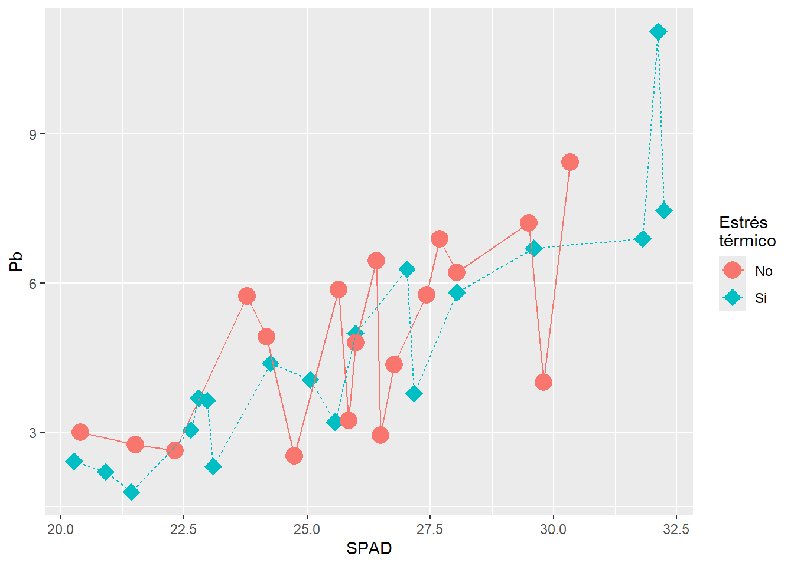
Como vemos, como todos los parámetros de clasificación responden al mismo factor, la leyenda es una sola. Para modificar el título de la leyenda se debe indicar el cambio para todos los parámetros involucrados.
También se puede clasificar por tamaño en el caso de una variable continua, generará una escala automática.
ggplot(HOJA,
aes(SPAD, Pb,
size = Pb, # genera una escala discreta de tamaños
col = Pb)) + # genera una escala continua de color
geom_point()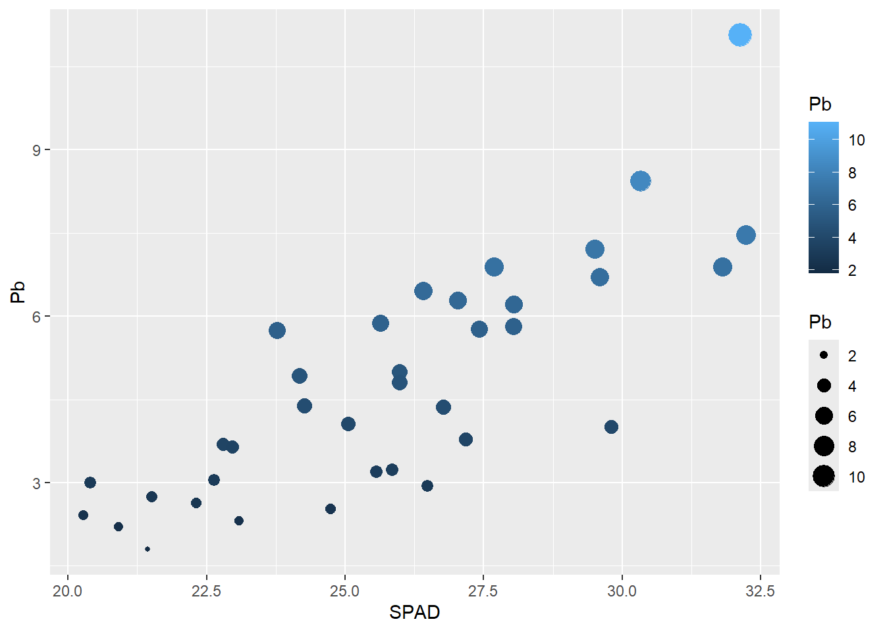
Subdivisión del gráfico con faceting
Si nuestro gráfico requiere la subdivisión por varios factores, además de por colores podemos dividir la ventana con faceting. El parámetro facet_grid requiere que introduzcamos por cuál/es variable/s se dividirá, por lo tanto toma la forma var1~var2, si solo hay una se reemplaza la faltante por un punto (.). Es importante destacar que todas las divisiones responderán a la misma escala. Así por ejemplo:
G2 + facet_grid(.~GT) # para dividir verticalmente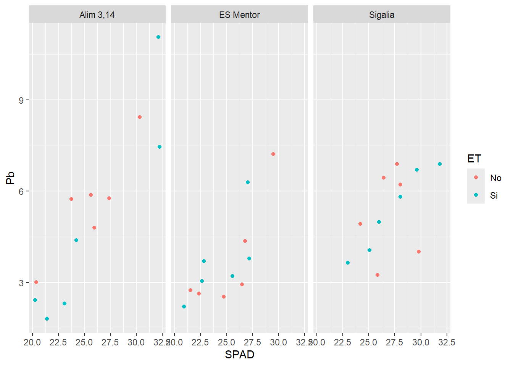
G2 + facet_grid(GT~.) # para dividir horizontalmente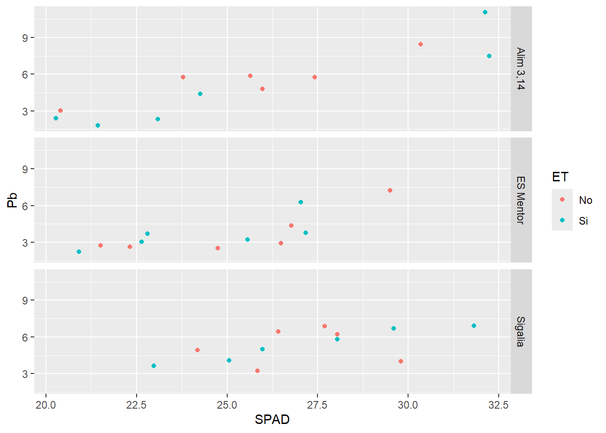
G2 + facet_grid(CO2~GT) # para dividir por ambas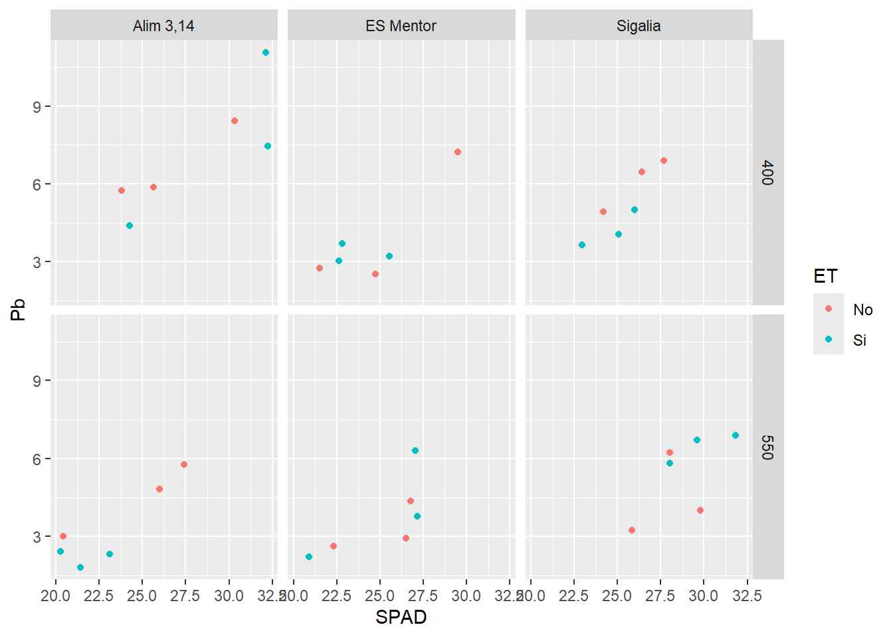
Multifaceting
Si quisiéramos definir más de un nivel de división, podemos utilizar la función facet_nested del paquete ggh4x. Por ejemplo de la siguiente manera:
library(ggh4x)
G2 + facet_nested(.~GT+CO2) # cada nivel de GT se divide por CO2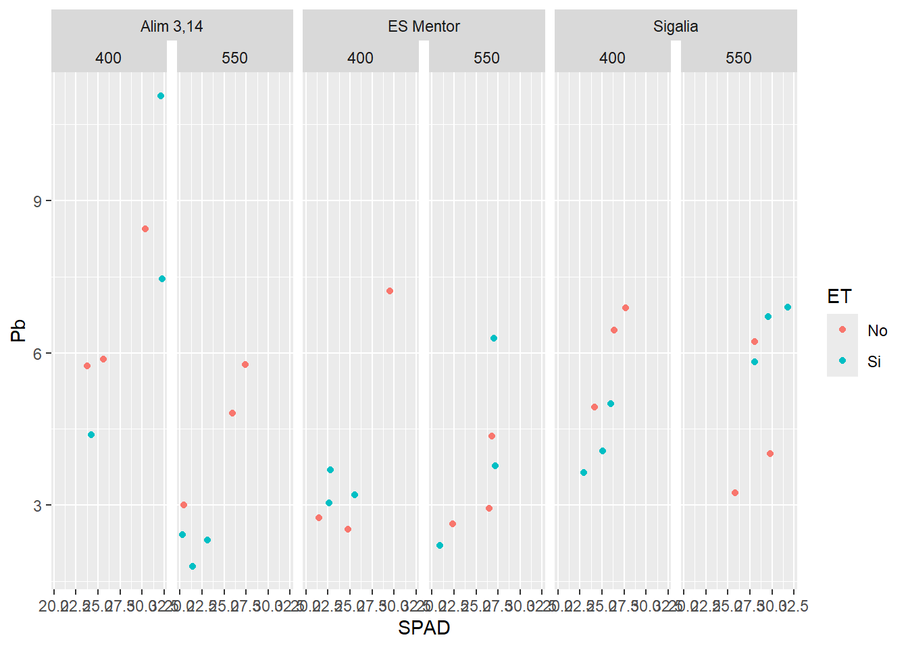
Definiendo la estética de nuestros gráficos
Exportación y edición posterior: un arma de doble filo
La posibilidad de exportar un gráfico y editarlo posteriormente en otro software siempre está sobre la mesa. Este apartado tiene como idea presentar y analizar brevemente sus ventajas y desventajas.
En este caso la que más he utilizado y funciona muy bien es el uso de imágenes vectorizadas. Si exportamos un archivo en formato svg, el mismo podrá verse en esta forma en software de edición de imagen. El que yo recomiendo es Inkscape, ya que es gratuito y multiplataforma y su forma de uso es muy intuitivo. La ventaja de tener la imagen vectorizada es que no perdemos calidad y además nos brinda la posibilidad de manipular cada uno de los elementos del gráfico individualmente.
El manejo externo de los gráficos es una herramienta muy poderosa en cuanto a las posibilidades que nos ofrece, ya que podemos modificar lo que queramos a nuestro antojo y con muy buenos resultados. Sin embargo, tiene una desventaja enorme: nuestra edición no es repetible. Esto quiere decir, que si por algún motivo tuvimos que hacer el gráfico de nuevo, todo el trabajo de edición empieza de cero. Y, al menos en mi experiencia de trabajo, rehacer un gráfico ya hecho es cosa de todos los días (decidimos incluir o no un outlier, corregimos datos, modificamos un factor, cambiamos de idioma el gráfico, etc.).
Por estos motivos, mi recomendación es intentar hacer lo más posible directamente en R y solo en casos de extrema necesidad acudir al software externo. A pesar de esto, no deja de ser una herramienta potente y a tener en cuenta.
Definiendo el theme en ggplot2
Cuando realizamos un gráfico con ggplot la mayor parte de las cuestiones estéticas se definen dentro del parámetro theme. Este apartado nos permite modificar las letras del gráficos en general, de los ejes, de los títulos de los ejes, la posición y estructura de la leyenda, etc. La estructura general consiste en nombrar el elemento a modificar, luego establecer el tipo de elemento, y finalmente modificar los parámetros. Supongamos a modo de ejemplo que queremos que las etiquetas del eje x estén en negro, con tamaño de letra 12, con inclinación vertical. Entonces escribiremos:
Gráfico +
theme(axis.text.x = element_text(size=12 ,
colour = "black",
angle= 90))Podemos ir separando por comas diferentes elementos que queramos modificar. Otra opción interesante es crear un objeto con todas nuestras modificaciones, que luego podemos aplicar a todos nuestros gráficos. También existen temas prediseñados que modifican varios parámetros a la vez. Estos se introducen con el comando theme_ donde las opciones son muchas, en particular a mí me gusta la opción theme_pubr 1 del paquete ggpubr. Podemos combinar todo en un objeto, por ejemplo:
library(ggpubr)
Attaching package: 'ggpubr'The following object is masked from 'package:plyr':
mutateTHEME <-theme_pubr() +
theme(plot.caption = element_text(hjust = 0, vjust=.5),
plot.title.position = "plot",
plot.title = element_text(size=rel(1.5)),
text = element_text(size=12, colour = "black"),
axis.text = element_text(size=12 , colour = "black"),
axis.line = element_line(colour = "black"),
legend.position = "right",
legend.text = element_text(size=12, colour = "black"),
legend.background = element_rect(colour = "black")) # recuadro de la leyendaLuego podemos incorporarlo al final de los gráficos, así:
G1 + THEME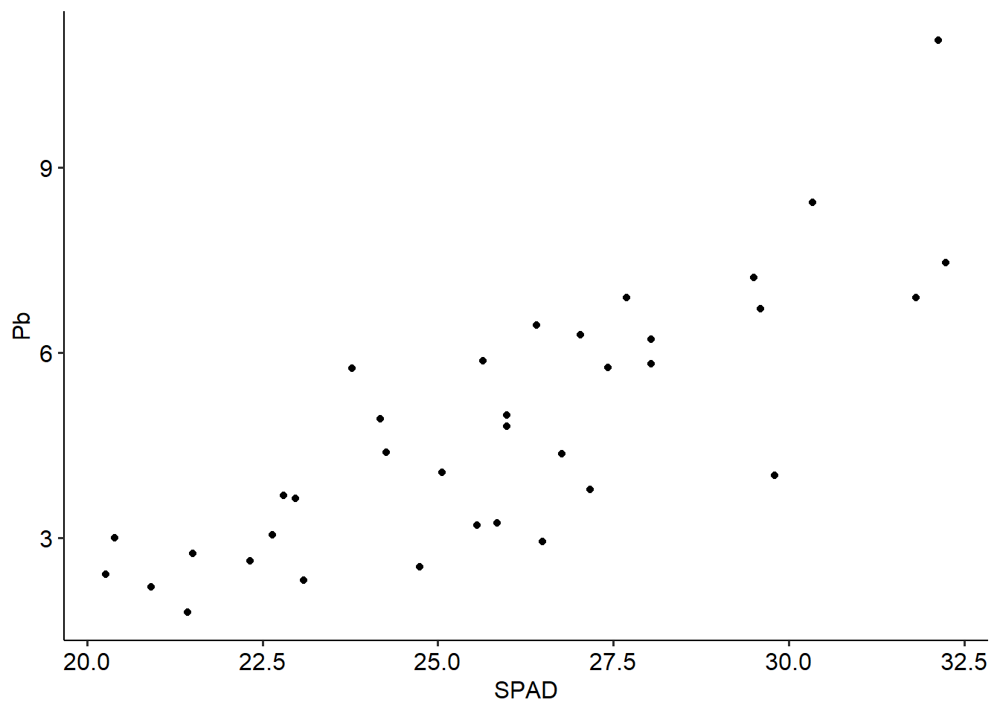
G3 + THEME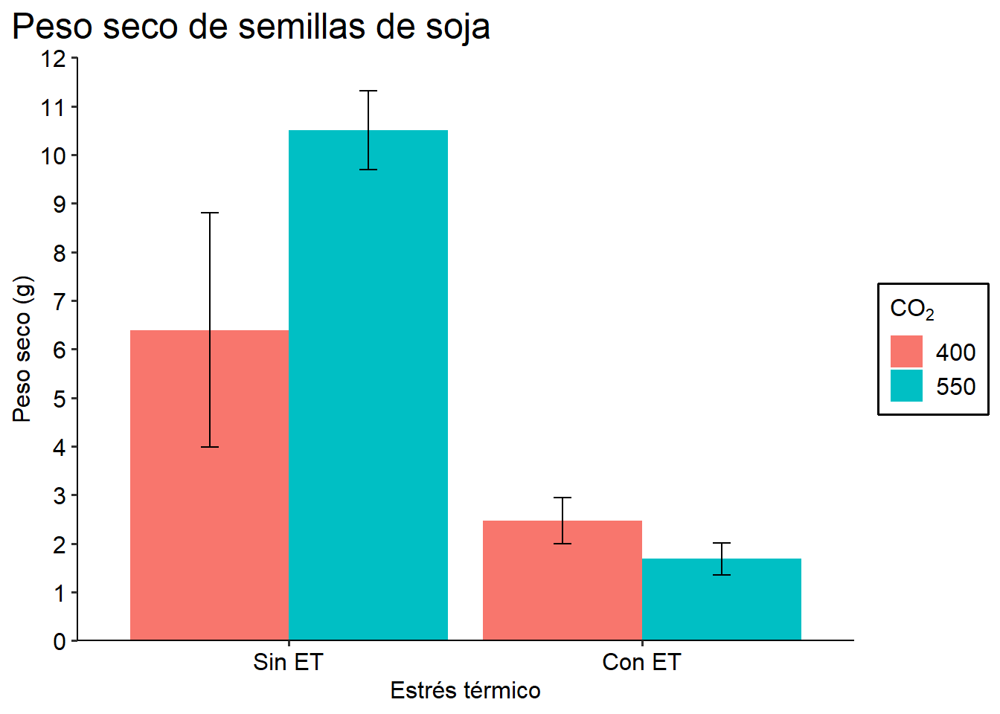
Fuentes
Dentro de la opción text, podemos elegir la fuente de nuestro gráfico.
...theme(
text = element_text(family = "Times New Roman"))Las fuentes disponibles en windows no son muchas: “Arial”, “Times New Roman”, “Calibri”, “Courier New”, “Verdana”. Varían un poco de acuerdo a nuestro sistema operativo. Con el paquete extrafont podemos incorporar bastantes más.
Para chequear las fuentes disponibles en windows ejecutamos:
names(grDevices::windowsFonts())[1] "serif" "sans" "mono" Para agregar en R las que tengamos en nuestro sistema podemos correr font_import(), luego cargarlas con loadfonts() y ver la lista con fonts() :
library(extrafont)
loadfonts()
fonts()Algo muy importante, es que al momento de exportar como pdf nuestras imágenes, la fuentes tienen que estar embebidas para que las pueda leer cualquier lector de archivos pdf. Por suerte las nuevas versiones de ggsave() incluyen una opción que realiza esto de manera muy simple:
G3 +
theme(text = element_text(family = "serif", size = 18))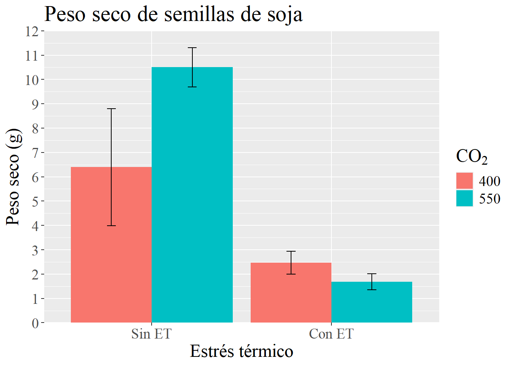
G3 +
theme(text = element_text(family = "mono", size = 18))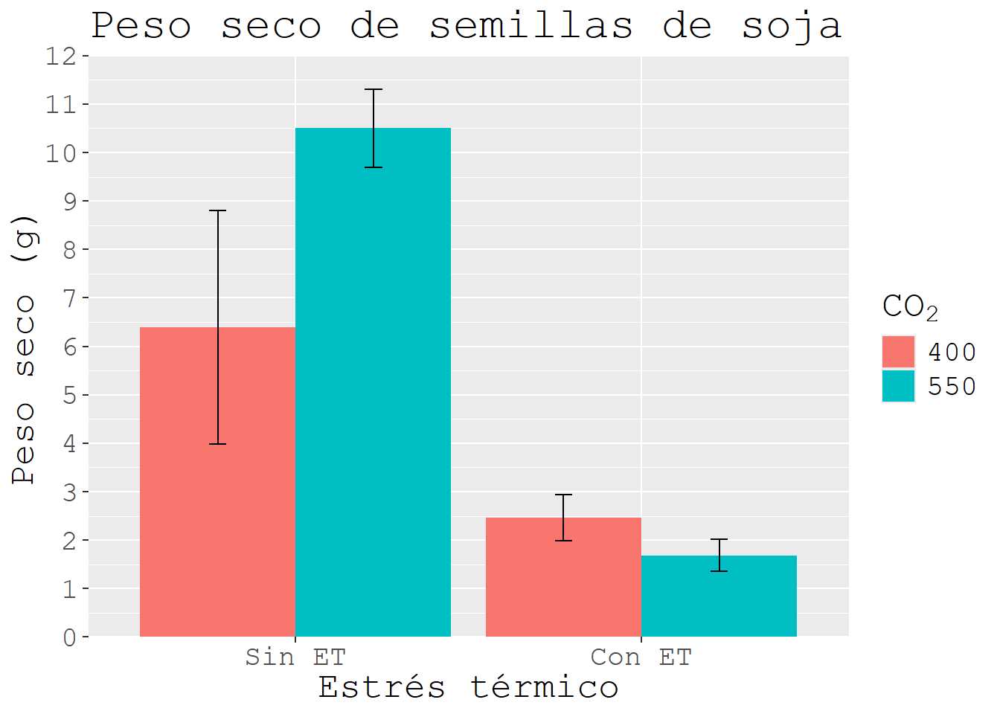
ggsave("G3.pdf", device = cairo_pdf)División de la ventana gráfica
Esta es una herramienta muy útil que nos permite visualizar más de un gráfico a la vez en la ventana 4 de RStudio. Ya que esta ventana suele ser pequeña, es recomendable marcar en Zoom una vez creado el conjunto de gráficos para verlo externamente.
layout
Esta opción ya la vimos anteriormente para los gráficos de supuestos. Básicamente se debe especificar una matriz mediante el comando matrix cuya estructura básica es:
matrix(1:n, #cantidad de casilleros
r,p) # distribución en filas y columnasEntonces para una matriz 2*2 será:
matrix(1:4,2,2)Para una 3*4 será:
matrix(1:12,3,4)Por lo tanto, el comando de división gráfica tendrá la forma:
layout(matrix(1:2,2,1))
Gráfico 1
Gráfico 2
layout(1) # al cerrar volvemos a establecer una ventana únicaSe deben incluir tantos gráficos como particiones creadas. Por ejemplo viendo dos gráficos creados anteriormente:
# 1 fila y 2 columnas
layout(matrix(1:2,1,2))
lineplot.CI(x.factor = SPAD, response = Pb, data = HOJA)
boxplot(PS~ET, ylim = c(0,12), data = SEM_Alim)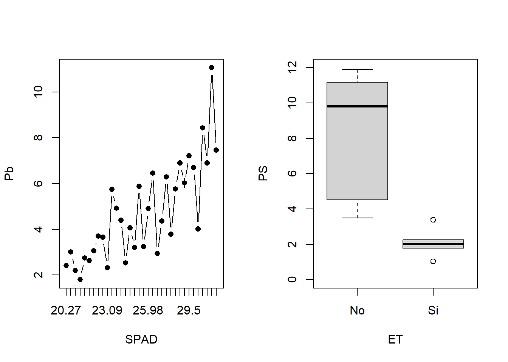
layout(1)Los parámetros widths y heights permite establecer uno más grande que el otro:
layout(matrix(1:2,1,2), widths = c(2,1))
lineplot.CI(x.factor = SPAD, response = Pb, data = HOJA)
boxplot(PS~ET, ylim = c(0,12), data = SEM_Alim)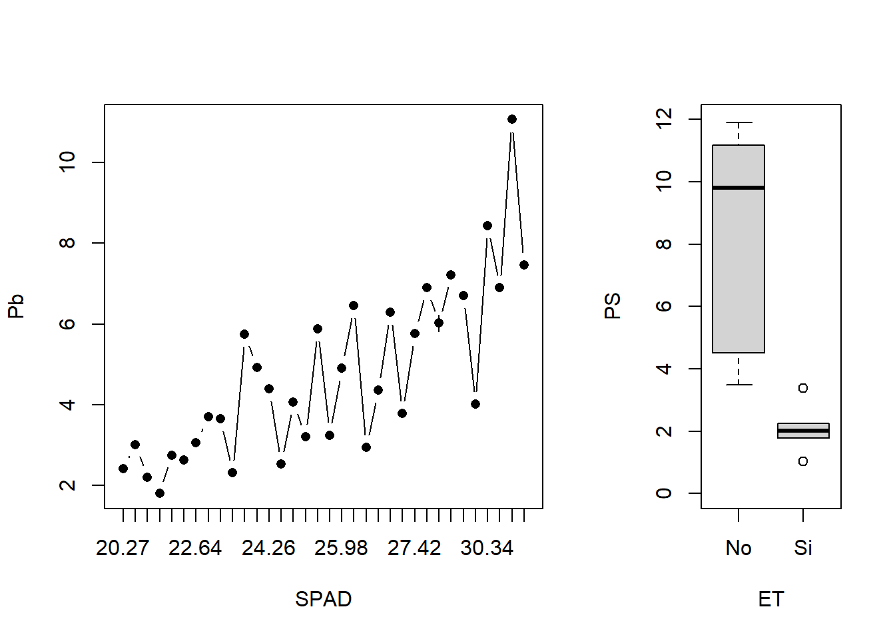
layout(1)par
La función par también nos permite dividir la ventana gráfica. Las opciones que ofrece son muchísimas, incluyendo opciones avanzadas del manejo de márgenes. Aquí solo la nombraremos brevemente, para obtener el mismo resultado mostrado anteriormente podemos hacer:
par(mfrow = c(1, 2)) # filas y columnas
lineplot.CI(x.factor = SPAD, response = Pb, data = HOJA)
boxplot(PS~ET, ylim = c(0,12), data = SEM_Alim)
par(mfrow = c(1, 1)) # volvemos a como estaba antesTanto la función layout como par son compatibles con Devices para la exportación.
grid.arrange
Esta función se encuentra dentro del paquete gridExtra y nos permite subdividir la ventana gráfica en un entorno de ggplot2. Además, es enteramente compatible con ggsave para su exportación.
Su estructura general tiene la forma:
grid.arrange(
Grafico1 + modificaciones,
Grafico2 + modificaciones,
.....,
ncol= número de columnas,
nrow= número de filas, # en general con establecer el número de columnas es suficiente
widths=c(1,1,2), # podemos modificar el ancho relativo de cada columna
heights=c(3,4,4) # lo mismo para las filas
)Como los gráficos en ggplot suelen involucrar muchas líneas, es conveniente crear un objeto con cada gráfico a utilizar. Por ejemplo, podemos combinar los gráficos creados anteriormente:
grid.arrange(G2, G3, ncol=2)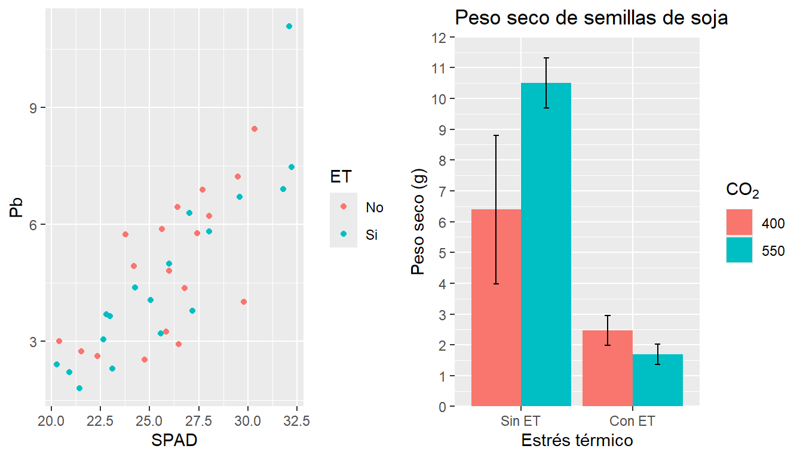
Para exportar estos gráficos, hay que reemplazar en el mismo comando ggsave por todo el arreglo con grid.arrange.
patchwork
El paquete patchwork2 permite una opción muy versátil para la combinación de gráficos y división de la ventana gráfica. Su uso además es muy sencillo, ya que si ya creamos los gráficos y tenemos el paquete cargado, podemos unir gráficos simplemente sumándolos:
G2 + G3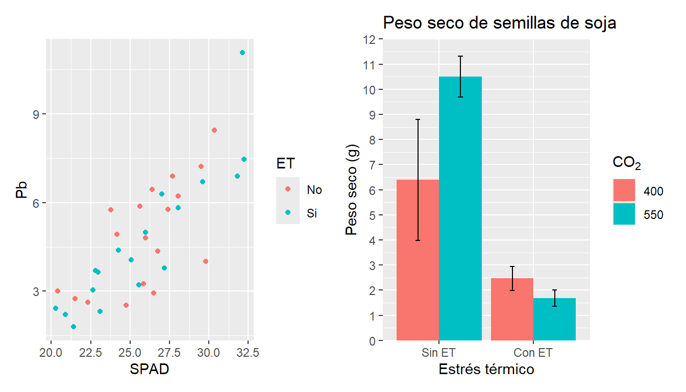
Existen diferentes combinaciones posibles, por ejemplo:
(G2 + G3)/ G1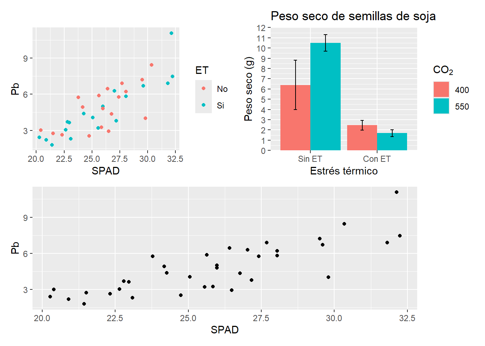
Dentro de este paquete se encuentra la función wrap_plots que acomoda correctamente los gráficos y alinea los ejes. Así podemos correr:
wrap_plots(G1, G2, G3)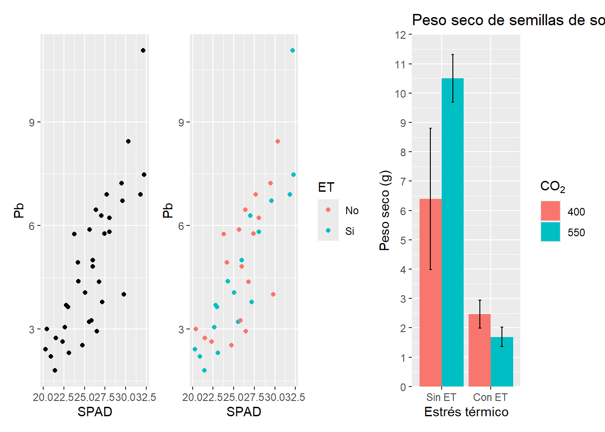
Podemos modificar la estructura del gráfico con la función plot_layout dentro de wrap_plot. Aquí podemos definir la estructura de filas y columnas, la posición de las leyendas (o agruparlas en algún sector). Por su parte, se pueden modificar e incluso automatizar anotaciones con plot_annotation. Por ejemplo modificando el agrupamiento anterior:
wrap_plots(G1 + G2 + G3 +
plot_layout(ncol = 1,
nrow = 3,
byrow = NULL,
guides = 'collect')) + # muestra las leyendas juntas
plot_annotation(tag_levels = 'a', # establecemos el tipo de enumeración
tag_prefix = '(',
tag_suffix = ')')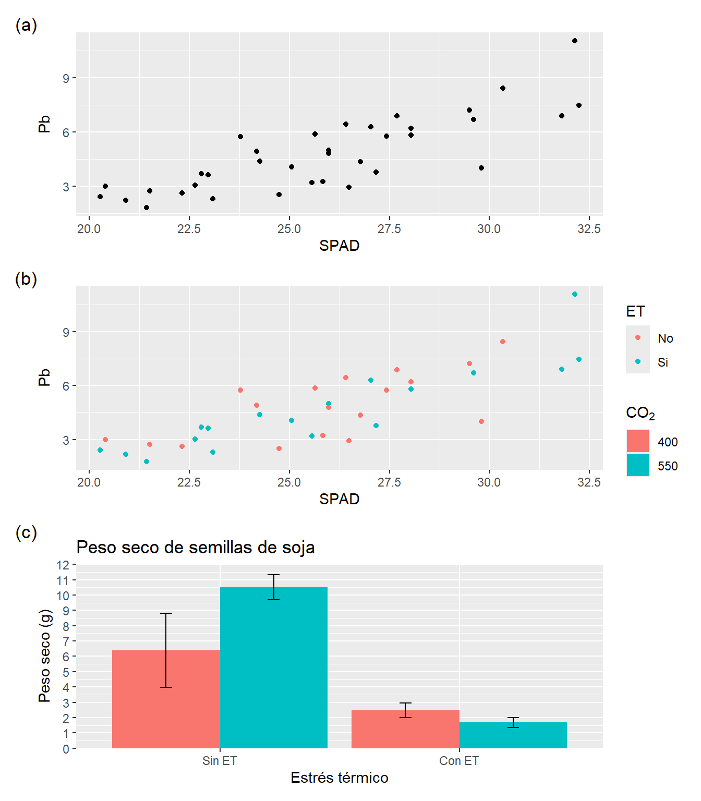
Veremos más adelante algunas otras posibilidades con este paquete. Para exportar los gráficos se procede de igual manera que con cualquier otro gráfico de ggplot mediante la función ggsave.
También si los gráficos estuvieran combinados con patchwork podemos incluir la cuestión estética a todos a la vez al final separando con el comando &:
wrap_plots(G1 + G2 + G3 +
plot_layout(ncol = 1,
nrow = 3,
guides = 'collect')) +
plot_annotation(tag_levels = 'a',
tag_prefix = '(',
tag_suffix = ')') &
THEME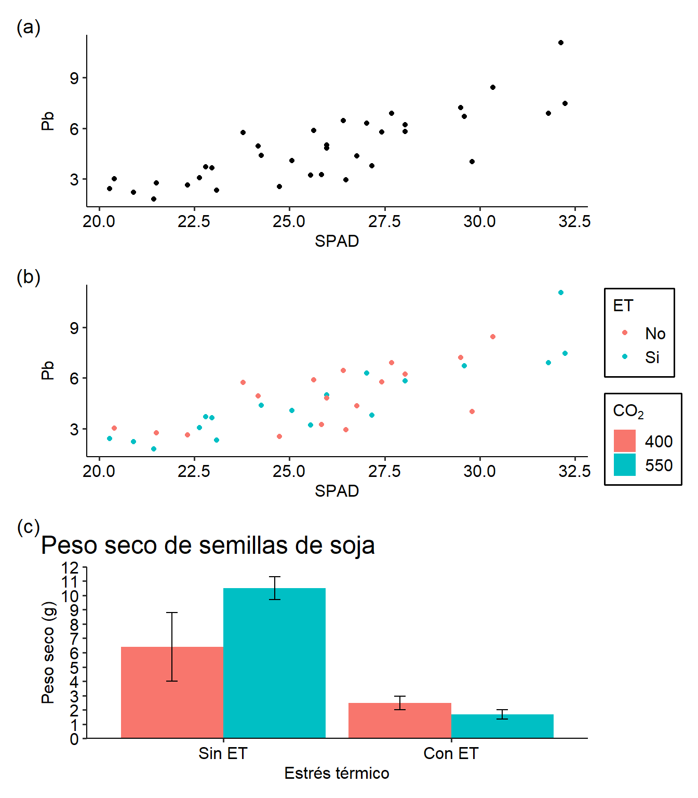
Si dos de los gráficos comparten el eje x (por ejemplo), puede ser de utilidad ocultar el título en uno de ellos, o incluso ocultar la escala en el eje. Esto se puede hacer de diferentes maneras, pero aquí les muestro una incluyendo el elemento vacío en el tema con element_blank :
wrap_plots(G1 + THEME +
theme(axis.title.x = element_blank(),
axis.text.x = element_blank())+
G2 + THEME +
plot_layout(ncol = 1,
nrow = 2,
guides = 'collect')) +
plot_annotation(tag_levels = 'a',
tag_prefix = '(',
tag_suffix = ')')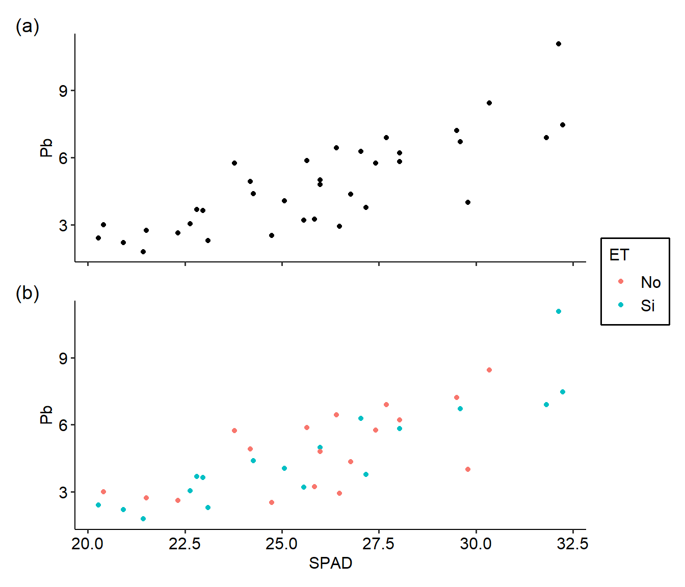
Actividad 6
Exporte los dos gráficos que realizó en las actividades 3 y 5 combinados en una sola figura de dos columnas y una fila, agregue etiquetas a cada uno, aplique colores y escalas a los ejes. Junte las leyendas en una sola.